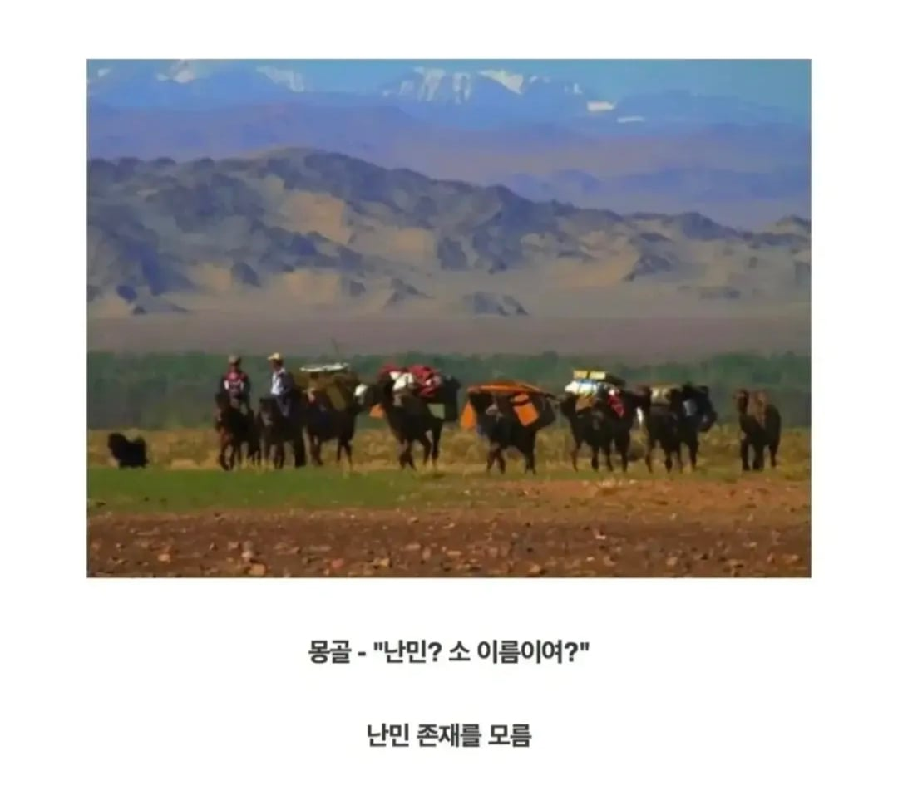

굳이 동아시아를…?ㅋㅋㅋㅋㅋㅋ
우리보고 중동난민 받으라는건 어불성설이지만
유럽보고 난민 받는걸 멈추라고 고나리하는것도 웃기는짓임
그 난민들이 왜 생겼는데. 유럽코쟁이들이 수백년간 북아프리카랑 중동에서 분탕질하다 발생한 결과 아니야. 지들이 쳐 싼 똥 치우게해야지 그럼 밖에 방치하라고 함?
우리보고 어깨걸고 분담하자 하면 니애미요 하고 거절은해도 니들 난민 그만받아라 이런 소리는 할 필요가 없음. 지들 업보 지들이 받는거지
유럽놈들은 업보 달게 받아야지 ㅋㅋㅋ
아직도 아프리카등 빨대꼽고있지않나ㅋㅋ 빨대가 약해지긴했다만
프랑스가 계속 하고 있다가 러시아랑 중국에 뺏기는 중 ㅋㅋㅋ
근데 누가 유럽보고 그만받으라함?
다들 알빠여 ㅋㅋ 하고있지않음?
ㅇㅇ그런 사람 없음 쉐도복싱임
일단 한국은 북한정권이 붕괴하면 세계경제건 군사건 문화건 엄청나게 충격적이라서 어느나라건 가볍게 말못함.
심지어 서방쪽은 6.25 도우면서 나라 ㅈ된걸 본적이 있어서 강요도 어렵지.
"야 우리가 니네 파병 병력 갈려나간 전쟁이 끝나지도 않았는데?? 휴전중인나라인데???"
그렇다고 찍어누르기엔 체급도 너무 커져버림
최소 2000만명난민... 손발이 후덜덜 떨린다 ㅋㅋ
다 지들 식민지 똥 넘어온것들인데 즈그가 받는게 맞지 뭔 동아시아를 ㅋㅋㅋ
일본은 받는다 해도 인도네시아 필리핀 이런쪽 받으면 되나?
북한둥절 ㅋㅋㅋㅋㅋ
굳이 인세의 지옥에서 탈출한 난민들을 우리가 받을 명분도 동기도 없긴 함.